📖 Visão Geral
Tecido nervoso = neurônios + células da glia. Neurônios captam, processam e transmitem; a glia sustenta, isola e nutre.
Unidade morfofuncional. Propriedades: irritabilidade e condutibilidade.
Sustentação, mielinização, defesa, LCR.
Onda elétrica — bomba Na⁺/K⁺, despolarização, repolarização.
Comunicação química (maioria) ou elétrica entre neurônios.
🧬 Neurônios
Células responsáveis pela recepção e transmissão dos estímulos do meio interno e externo.
Partes
- Corpo celular (pericário) — núcleo e organelas; integra os sinais.
- Dendritos — ramificações do corpo celular; captam estímulos.
- Axônio — maior prolongamento; conduz o impulso. Vesículas com neurotransmissores na porção terminal.
- Bainha de mielina — isolante elétrico formado pelas células de Schwann (SNP) ou oligodendrócitos (SNC).
- Nódulos de Ranvier — regiões sem bainha; permitem condução saltatória.
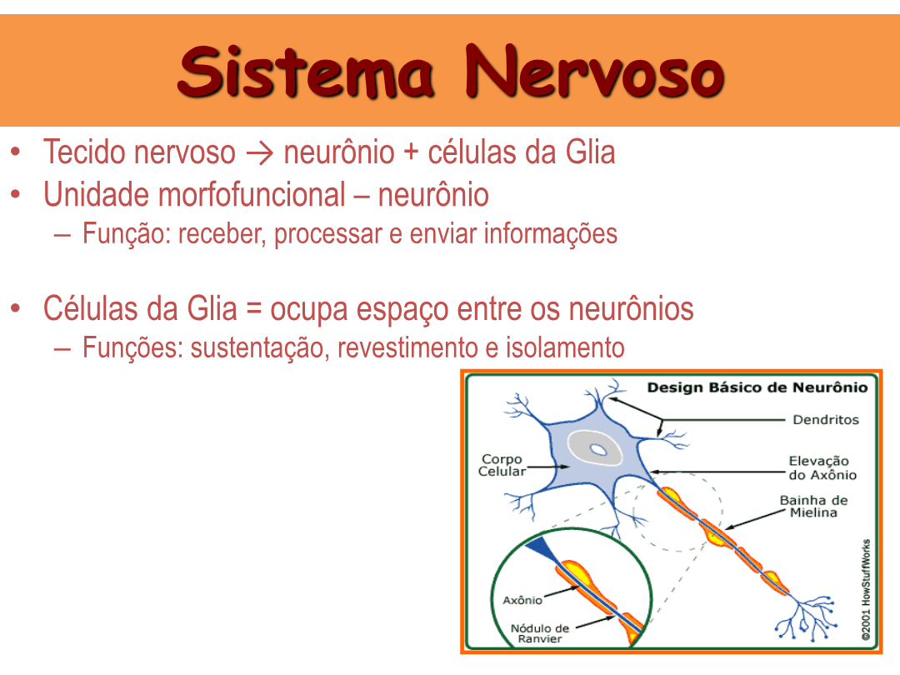
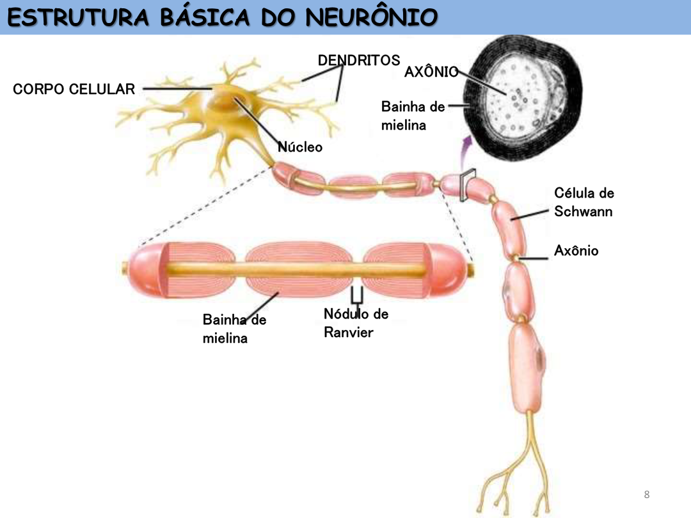
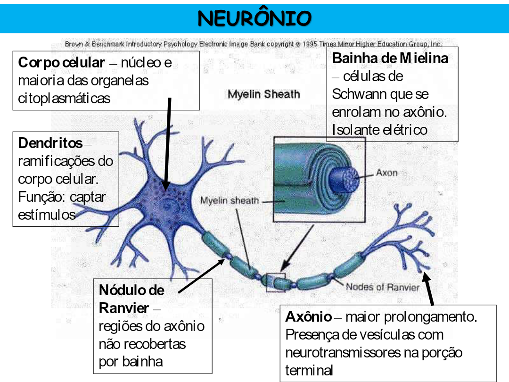
Tipos morfológicos
| Tipo | Exemplo |
|---|---|
| Multipolares | Grande maioria |
| Bipolares | Interneurônios (ex: retina) |
| Pseudo-unipolares | Gânglios espinhais |
Tipos funcionais
- Aferente (sensitivo) — leva info ao SNC.
- Eferente (motor) — leva ordens do SNC ao efetuador.
- Interneurônio (associativo) — conecta os dois.
🌟 Células da Glia (Neuróglia)
Participam da atividade neural, da nutrição, da defesa e da sustentação. São em maior número que os neurônios.
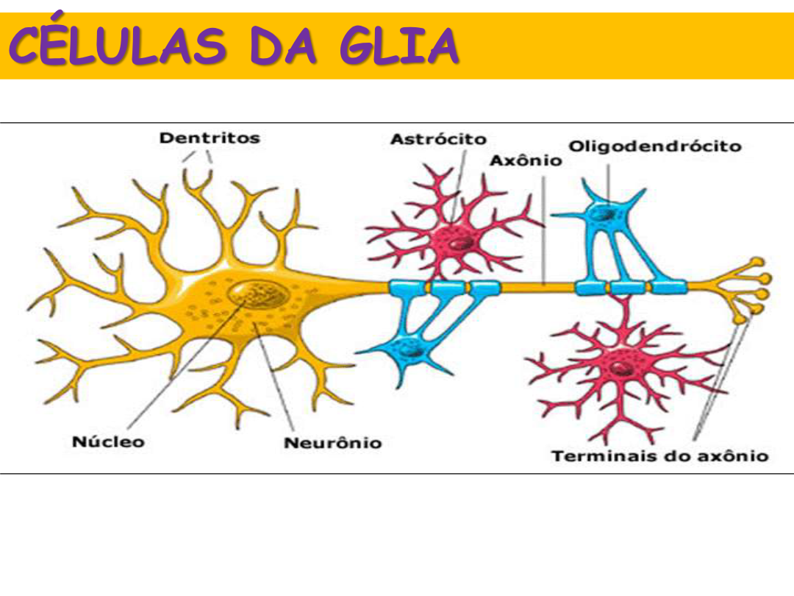
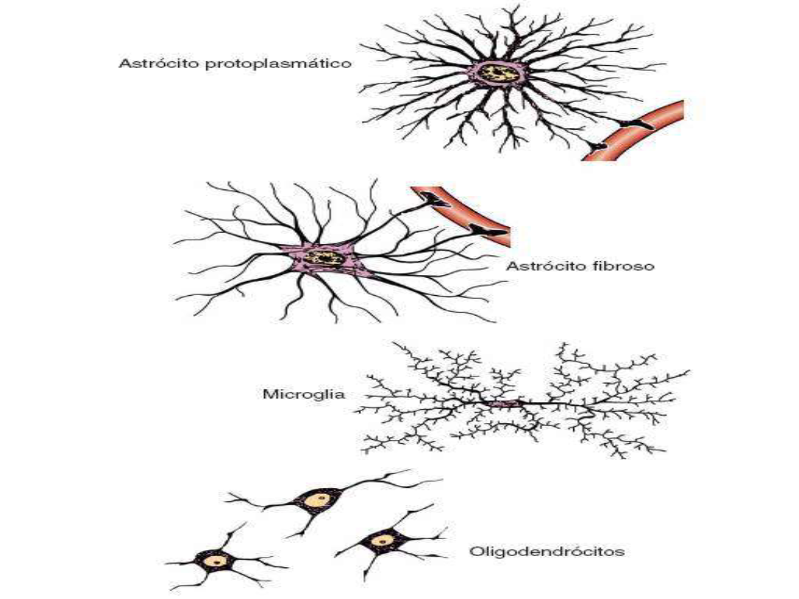
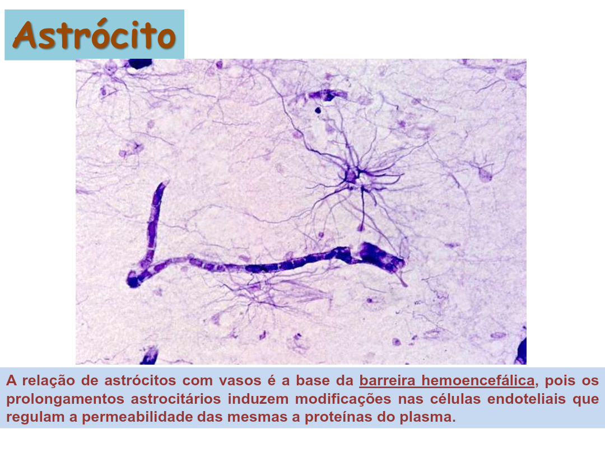
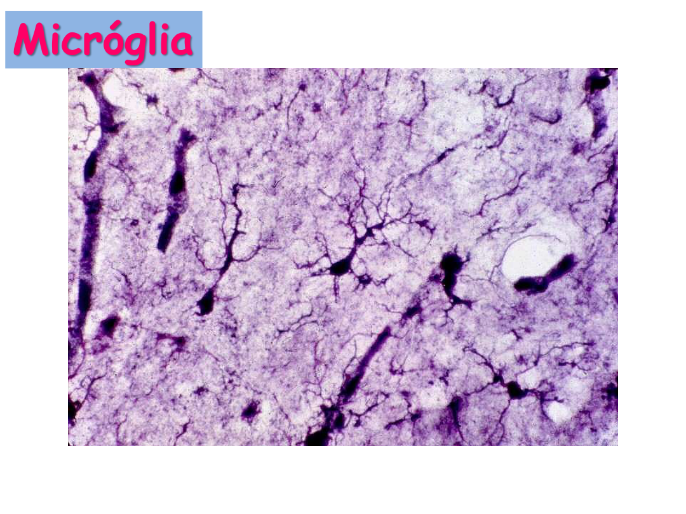
| Célula | Local | Função |
|---|---|---|
| Astrócitos | SNC | Sustentação, nutrição, barreira hematoencefálica |
| Oligodendrócitos | SNC | Mielinização (vários axônios cada um) |
| Células de Schwann | SNP | Mielinização no SNP — um trecho cada |
| Micróglias | SNC | Defesa imunológica, fagocitose |
| Células ependimárias | Ventrículos | Produzem o LCR nos plexos coroides |
⚡ Impulso Nervoso
Onda elétrica baseada na inversão do potencial da membrana via troca de Na⁺ e K⁺.
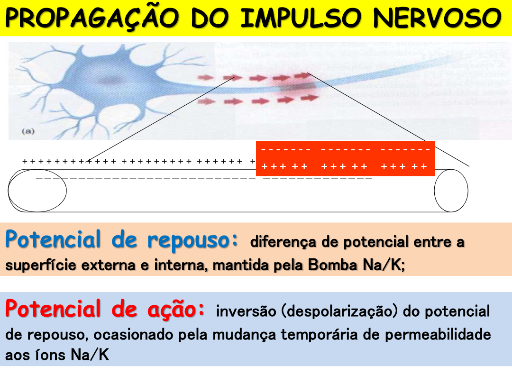
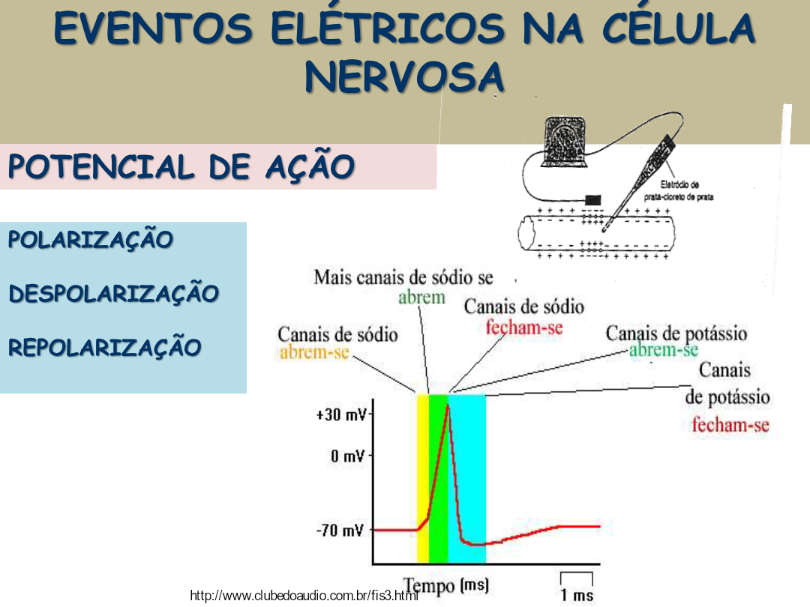
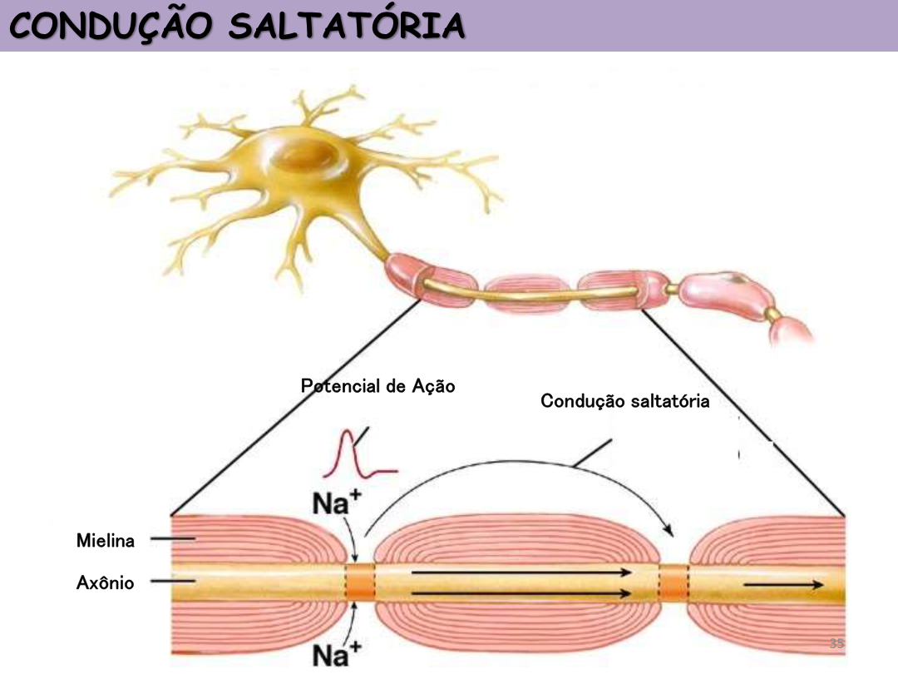
Fases
| Fase | Carga | Evento |
|---|---|---|
| Repouso (polarização) | ≈ −70 mV | Bomba Na⁺/K⁺ mantém o gradiente |
| Despolarização | até +30 mV | Canais de Na⁺ abrem; Na⁺ entra |
| Repolarização | volta a negativa | Canais de K⁺ abrem; K⁺ sai |
Bomba Na⁺/K⁺
Condução saltatória
Em axônios mielinizados, o impulso pula entre os nódulos de Ranvier — muito mais rápido.
🔗 Sinapses e Neurotransmissores
Sinapse: região de conexão (sem contato) entre dois neurônios. A maioria é química.
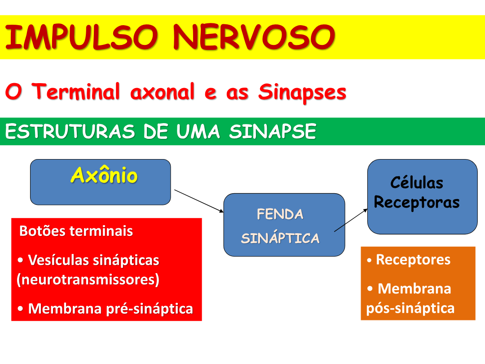
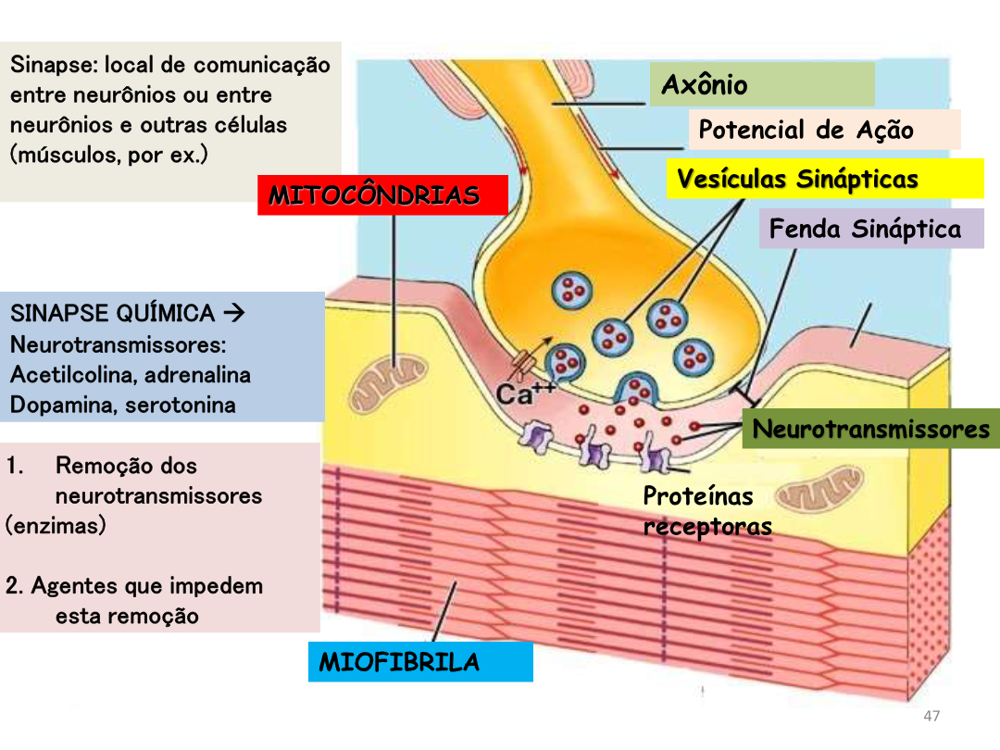
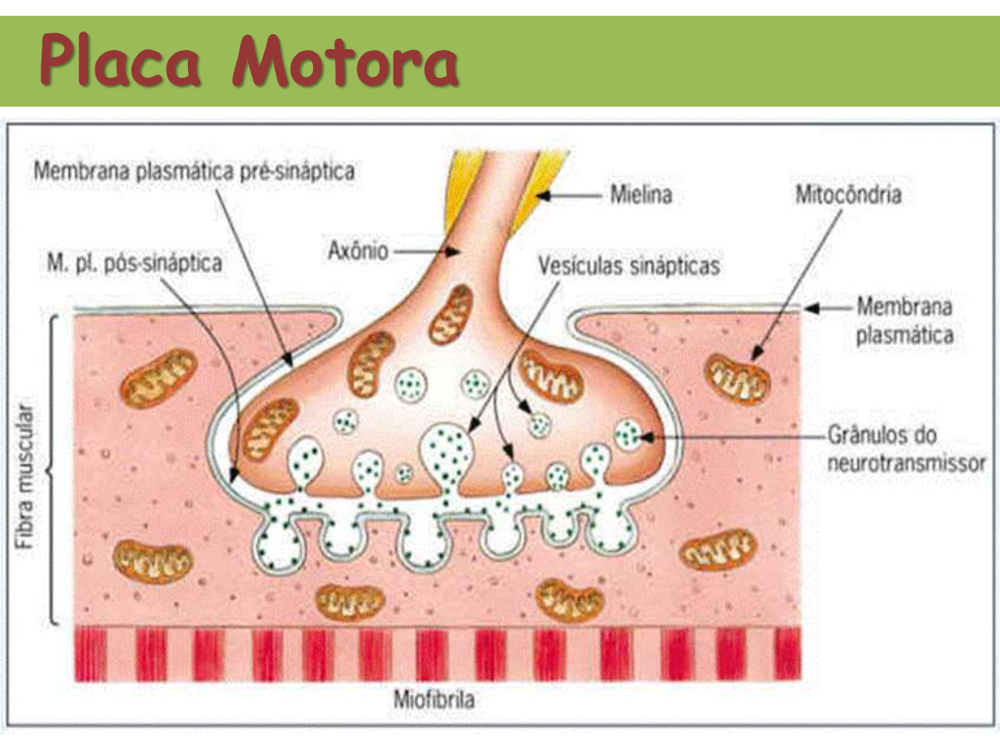
Tipos
| Tipo | Características |
|---|---|
| Elétrica | Mais rápida; ocorre em músculo liso e cardíaco |
| Química | Maioria; usa neurotransmissores |
Por quem se conecta
- Interneuronais — neurônio × neurônio
- Neuromusculares — neurônio × músculo (placa motora)
- Neuroglandulares — neurônio × célula glandular
Passos da sinapse química
- Potencial de ação chega ao terminal
- Entrada de Ca²⁺
- Vesículas se fundem à membrana
- Neurotransmissores liberados na fenda
- Ligam-se aos receptores pós-sinápticos
- Remoção (enzimas) encerra o sinal
Principais neurotransmissores
| NT | Função / associação |
|---|---|
| Acetilcolina | Atenção, memória; Alzheimer ↓; SNA parassimpático |
| Dopamina | Controle motor, motivação; Parkinson ↓ |
| Serotonina | Humor, sono, memória |
| Noradrenalina | SNA simpático; alerta |
| Glutamato | Principal excitatório |
| GABA | Principal inibitório |
| Encefalina/endorfina | Opiáceos endógenos — dor, estresse |
🃏 Flashcards
Clique para virar.
✅ Quiz Interativo — Escolha o tema
Cada quiz embaralha as perguntas E as alternativas. Refaça quantas vezes quiser para fixar o conteúdo.